Glossolalia (Section 66)
GLOSSOLALIA
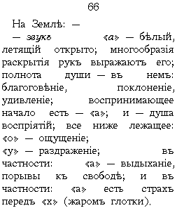
On Earth: --
-- the sound of "a" is -- white, it flies openly; multiple forms of opening up of the arms express it; in it is -- a fullness of the soul; reverence, worship, wonder; the apprehensible beginning is -- "a"; and it is the -- soul of apprehension; everything else lies lower: "o" is -- sensation; "u" is -- irritation; in particular: "a"is -- exhaling, outbursts to freedom; and in particular: "a" before "kh" is shock (the heat of the throat).
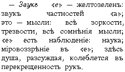
-- The sound of "e" is -- yellow-green: the sound of the particles "a"; these are -- thoughts: all perspicacity, sobriety, all doubts of thought; "e" is observation: science; Weltanschauung/world-view is in "e"; here the soul, as it makes judgements, wavers in a crossing of the arms.
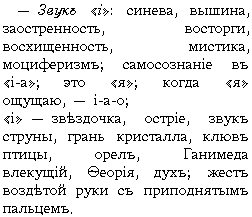
-- The sound "i" is cyan, a height, pointedness, ecstasies, the rapture of a mystic, Luciferism; selfconsciousness is in "i-a"; this is "I am" when "I" sense things, -- i-a-o; "i" is -- a little star, a sharp point, the sound of a string, the facet of crystal, a bird's beak, an eagle, Zeus attracting Ganymede, Theoria, the spirit; the gesture of the raised arm with upraised finger.
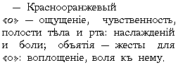
-- The red-orangy "o" is -- a sensation, sensitivity, of the cavity of the body and the mouth: of pleasures and pain; embraces are -- the gestures for "o"; it is incarnation, the volition toward it.
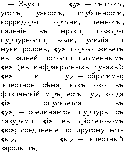
-- The sounds "u" are -- warmth, angularity, narrowness, depths, corridors of the larynx, darknesses, a fall into murkinesss, fires of purpleness, wills, forced efforts and the torments of birth; "u" lives for a time in the rear cavity as a flaming "v" (in infrared rays); "v" and "u" are -- reversible; the animal seed, as an eye to the physical world, this is "u"; when "i" descends into "u" -- purple unites with lazures of "i" in the violet-colored "iu"; the unification in another way is "y"; "y" is -- the animal embryo.
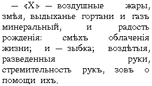
-- "KH" are -- aery heats, a serpent, exhalation from the larynx and a mineral gas, and the joy of birth: the laughter of swaddling life; and -- a cradle; arms spread apart, lifted up, the striving of arms, their call for help.
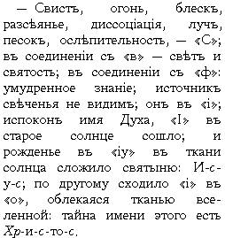
-- A whistle, fire, gleaming, dissemination, dissociation, a ray, sand, blindingness, are -- "S"; in union with "v" it is a swirl of light [svet] and svelte sanctity [svyatost']; in union with "ph": it is knowledge imbued with wisdom; we cannot view the source of luminescence; it is in "i"; from time immemorial the name of the Spirit, "I" descended onto the senile sun; and birth in "iu" in the fabric of the sun consolidated the sacred: Ie-s-u-s; in another way "i" descended into "o", robing it in the fabric of the universe: the mystery of this name is Chr-i-s-to-s.
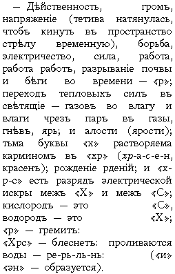
-- Efficacy, thunder, tension (a bowstring was drawn tight, to shoot into space the temporal arrow), a brawl, electricity, force, labor, the labor of labors, the break up of the soil and flights through time -- these are "r"; the transition of the forces of warmth into luminous ones -- of gases into moisture and of moisture via steam into gases, anger; fury; and scarlet (clarity); the darkness of the letter "kh" dissolved by carmine into "chr" (chr-i-m-s-o-n, cr-i-m-s-o-n); the birth of redness; and "ch-r-s" is the discharge of the electrical spark between "CH" and "S"; oxygen -- this is "S"; hydrogen this is --"CH"; "r" thunders: "CHrs" -- gleams; the waters flow by -- re-r'-l'-n'" ("i" and "n" are -- given form).
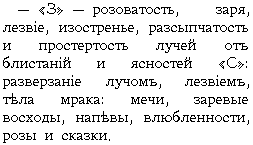
-- "Z" is -- rosiness, sunrise, a razorblade, pointedness, dispersion and extension of rays from the gleamings and clarities of "S"; the opening wide by the ray, by a razorblade of the body of murkiness: swords, dawn's sunrises, songs, beings in love, roses and fairy tales.
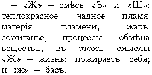
-- "Zh" is -- a mixture of "Z" and "SH": warm-red, a smoky flame, the matter of the flame, fusion, the process of exchange of substances; in this meaning "ZH" is --- vitalization: it devours itself; and "zh" is -- a bass sound.
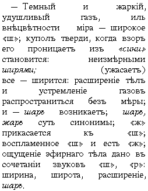
-- Dark and hot, a smothering gas, or of the world beyond color is -- the shape of "sh"; the cupola of the firmament; when a gaze penetrates into it from the "cyan" it becomes: immeasurable expansions; (it shakes) everything -- expands: the expansion of bodies and strivings of gases to spread apart immeasurably; and -- a sphere shape arises; the Russian words for sphere [shar] -- and ashen heat [zhar] are synonyms; "zh" brushes against the "sh"; a flaming "sh" is also a "zh"; the sensation of the ethereal body is given in the combination of the sounds "sh", "r": sheer breadth and width, sharp expansion, ashen heat.
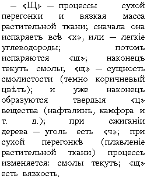
"SCH" are -- processes of the dry distillation and a viscous mass of the plant fabric; in the beginning it evaporates all "kh", or -- the light hydrocarbons; then the "sh" sounds evaporate; finally tars begin to flow; "sch" is -- the essential sheen of tariness (a dark brownish color); and finally there form as firm "ts" substances (naphthalene, camphor, etc.); from the burning of wood -- charcoal is the "ch"; in the dry distillation (the liquifaction of plant fabric) the process shifts: tars flow; "sch" is viscosity.
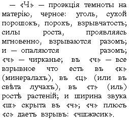
-- "CH" is -- the projection of darkness onto matter, black: charcoal, a dry powder, gunpowder, explosiveness; forces of growth, appearing simultaneously, explode all at once; and are -- scorched all at once; "ch" is -- the scratch of a match; in "ch" is -- all of the explosiveness that is in the "k" (the minerals), in "ts"(or in rays of light), in "t" (or in the growth of growing things); and the sheer breadth of the sound "sh" is concealed in "ch"; "ch" plus "s" gives an explosion: "chshzhesik".
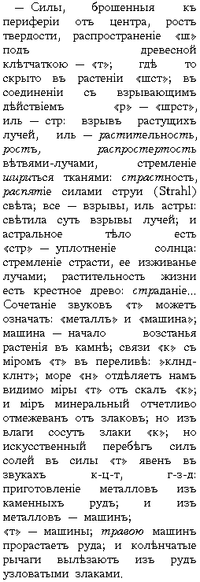
-- The forces, thrown to the periphery from the center, the growth of firmament, the spread of "sh" under the cellulose of the trees are -- "t"; somewhere in these growths is concealed "shst"; in union with the explosive action of "r" it is -- "shrst", or str: the burst of growing rays, or -- growths of plants, growths, prostration of branches-rays, striving to stretch wide fabrics; passionate struggle, crucifixion by the forces of streams (Strahl) of light; all are -- explosive bursts, or asters: the celestial stars are bursts of rays; and the astral body is "str" -- the condensation of the sun; the striving of the passionate struggle, it lives out its life in rays; the plant growths of life are the tree of the cross: the struggle of the passion... The combination of "t" sounds can signify: "metal" and "machine"; a machine is -- the beginning of the rise of plants in rock; the connections of "k" with the world of "t" comes in the interplay of: "klnd-klnt"; the sea of "n" separates for us the visible worlds of "t" from the rocky cliffs of "k"; and the mineral world is distinctly disassociated from the golden grains; but from the moisture the golden grains suck "k"; but an artificial runoff of forces of salt into the forces of "t" is apparent in the sounds k-ts-t, g-z-d: the preparation of metals from rocky ores; and the preparation from metals -- of machines; "t" are machines; the ore grows like the sprouts of machines; and toggle levers crawl out of the ore as gnarled golden grains.
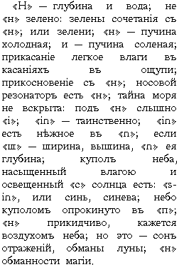
-- "N" is -- deepness and water; it is not the "n" that is -- green: combinations with "n" are green; or -- greenery: "n" is a colden netherworld; and -- a salten netherworld; a light touch of moisture at points sensitive to touching; touching with "n"; "n" is a nasal resonator: the mystery of the sea is not revealed: beneath the "n" can be heard an "i"; "in" is -- intrigue; "in" is something tender in "n"; if -- "sh" is sheer breadth, sheer height, then "n" is its deepness; the cupola of the palate, now saturated with moisture and illuminated by the "s" of the sun is -- "s-in" -- or cyan, cyanic; the sky's cupola is inverted into "n"; "n" is thrown in, it seems like the air of the sky; but this is -- a somnulent dream of reflections, of deceptions of luna; "N" is -- the deceptiveness of magic.
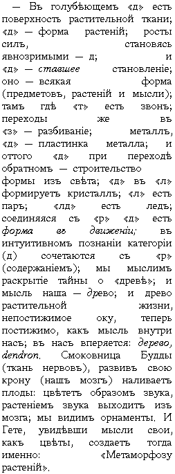
-- In the pale bluing "d" is the surface of the fabric of plant growth ; "d" is -- a form of plant growth; growths of forces, as they become clearly visible are -- d; and "d" is -- something becoming which has become; it is -- any form (of objects, of plants and of thought); wherever there is a "t" there is a ringing sound; transitions into the "z" are -- a smashing apart; metal, "d" is -- a plate of metal; and thence "d" in reverse transition is -- the construction of form from light; "d" into "l" forms crystal; "l" is steam; "ld" is icy cold; "d" uniting with "r" is form in dynamism; in the intuitive cognition the categories (d) combine with "r" (ingredient); we think of the revelation of the mystery of the "tree"; and our thought is -- a dendron; and the dendron of plant life, inaccessible to the eye, is now accessible, as the thought inside of us; it stares inside of us: tree [derevo], dendron. The Bo tree of Buddha (the fabric of nerves), having developed its crown (our brain) pours forth its fruits: it blooms in the image of sound, as a growth of sound it exits from the brain; we view the designs. And Goethe, who had visualized his own thoughts, like flowers. creates at precisely that point: "Metamorphosis of Plants."
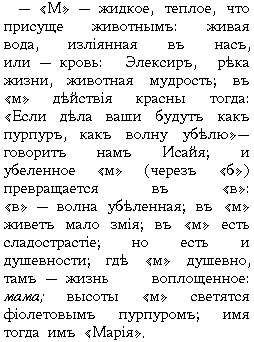
-- "M" is -- something liquidy, warm, inherent in animals: the living water, which has flowed out into us, or -- blood. Elixir, the river of life, animal wisdom; in "m" actions are crimson: "If your acts will be like purple, I will whiten them like a wave" -- says Isaiah to us; and the "m" whitened (through the "b") transforms itself into "v"; "v" is -- a wave whitened; in "m" lives a little of the serpent; in "m" is voluptuousness; but there is also spirituality; where the "m" is spiritual -- there is life incarnated; mama; the heights of "m" are illuminated with a violet purple mantle; their name is "Maria."
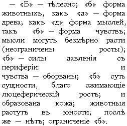
-- "B" is -- bodily; "b" is the form of animals, as "d" is the form of the dendron; as "d" is the form of thoughts, so is "b" -- the form of feelings; thoughts may grow immeasurably (the growths are limitless); "b" are forces of pressure from the periphery: and feelings are -- broken off; "b" are essences/beings, who blessedly restrict the Luciferian growth; and the skin is formed; animals grow in youth; afterwards -- not; "b" is a boundary.
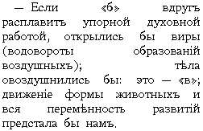
-- If "b" would suddenly melt by assiduous spiritual labor, whirls would be revealed (whirlpools of aerial formations); bodies would be aerated/filled with air: this is -- "b"; the dynamism of the form of the animals and all amendment of developments would stand before us.
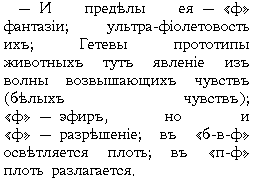
-- And its borders are -- the "ph" of phantasy; their ultra-violetness; Goethe's prototypes of animals are here a phenomenon from the wave of exalted feelings (white feelings); "ph" is -- ether; but "ph" is also -- resolution; in "b-v-ph" the flesh is illuminated; in "p-ph"the flesh decomposes.
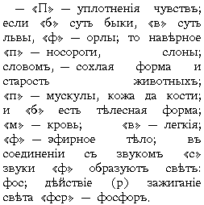
--"P" are -- condensations of feelings; if "b" are bulls, "v" are lions, "ph" are eagles; then surely "p" are -- rhinoceri, elephants; in a word, -- the dried-up form and the senility of animals; "p" are -- muscles, skin and bones; and "b" is the bodily form; "m" is -- the blood; "v" are -- the lungs; "ph" is -- the ethereal body; in union with the sound "s" the sounds "ph" form light: phos; the action of "r" the ignition of the light "phsr" is -- phosphorus.
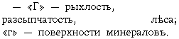
-- "G" is -- porous, scattering about, the forests, "g" are -- the surfaces of minerals.
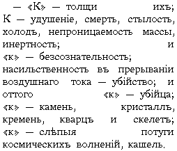
-- "K" is -- their thickness; K is -- strangulation, death, congealing, cold, the impermeability of mass, inertness; and "k" is -- unconsciousness; the use of force to interrupt the air flow is -- killing; and thence "k" -- is a killer; "k" -- rock, crystal, silica, quartz and a skeleton; "k" are -- blind muscular contractions of cosmic disturbances, coughing.
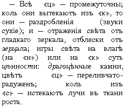
-- All "ts" are -- intermittents; if they flow out of "k," then they are -- fragments (dried out sounds); and they are -- reflections of sound off a smooth mirror, gleamings of lights from the looking glass [zertsalo]; the play of light on the moisture (on "n") or on the "k" are known qualities: precious stones or rocks; the color [tsvet] of "ts" is -- a rainbowishlike iridescence; if "ts" flow out of the "s" they are -- rays flowing out into fabrics of growth.
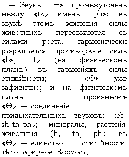
-- The sound "th" is intermediary between "ts" and of the names "ph": in this sound the ether forces of animals intersect with the forces of growths; the contradiction of the forces "b" is resolved harmoniously, "t" (on the physical plane) is in the harmonies of forces of the elements; "th" is -- something beyond-physical; and on the physical plane the pronunciation of "th" is -- the union of aspirated sounds: "ch-sh-th-ph"; minerals, plants, animals (h, th, ph) in "th" is -- the unity of the elementarity: the ether body of the Cosmos.
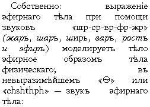
Properly speaking: the expression of the ether body with the aid of the sounds "shr-sr-vr-fr-zhr" (ashen heat, sphereshaped, sheer breadth, vapor, growths, and ether) models the ether body in the image of the physical body; in the most inexpressible "th" or "chshthph" is -- the sound of the ether body:
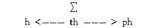
h< - - - th - - - > ph
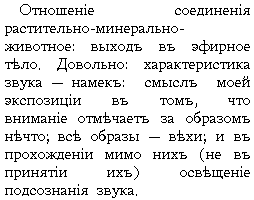
The relationship of unification of the plant - mineral - animal is: the exit into the ether body. It is sufficient that: the characterization of the sound is -- a hint: the meaning of my exposition lies in the fact that our attention takes note of something behind the image; all images are -- landmarks; and in the walking alongside of them (not in the reception of them) is the illumination of the subconsciousness of sound.
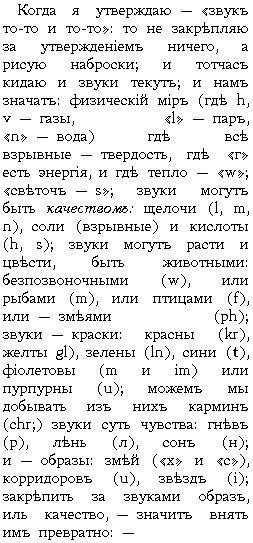
When I affirm -- that "a sound is this or that": then I am not attaching to that assertion anything, rather I am simply drawing sketches; and here I toss them out and the sounds flow; and they signify for us: the physical world (where h, v, are -- gases; "l" is steam; "n" is -- water), where all plosives are -- the firmament , where "r" is energy, and where warmth is -- "w"; "a luminary is -- "s"; sounds may be a chemical property; alkalis (l, m, n); salts (the plosives), and acids (h, s); sounds can grow and blossom, they can be animals; the invertebrates (w), or the fish (m), or birds (f); or -- serpents (ph); sounds are -- colors; crimson (kr), golden (gl); green (zl); cyan (t), violet (m and im) or purple (u); we can add here from them carmin (chr); sounds are feelings; anger (r), laziness (l); somnulence (n); and -- images: of serpents ("kh" and "s"), of corridors (u), of stars (i); to attach an image, or a quality, to the teeth, -- signifies they are to be heeded conversely --
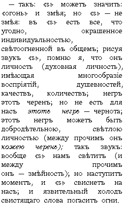
-- so that: "s" can signify: "fire" and a serpent: but the "s" is -- not a serpent; in the "s" is everything you need, it is colored with individuality, firely-lit in general; as I draw the sound "s," I remember that it is an individual (a spiritual individual), possessing a multiplicity of perceptions, spiritualities, qualities, quantities; this negro is a black; but this negro for us is -- not blackness; this negro might be a beneficent shining individual (and it just so happens that he is black-skinned); so it is with a sound: in general "s" shines a light at us (and by the way it is -- serpentry); but the moment will come, and "s" will whistle at us; and the caustic cold of the whistling word will extinguish the fires.
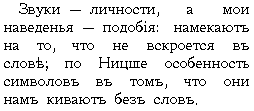
Sounds are -- individuals, and my indications are -- likenesses: they hint at that which is not revealed in the word; according to Nietzsche the particularity of symbols rests in the fact that they nod to us without words.